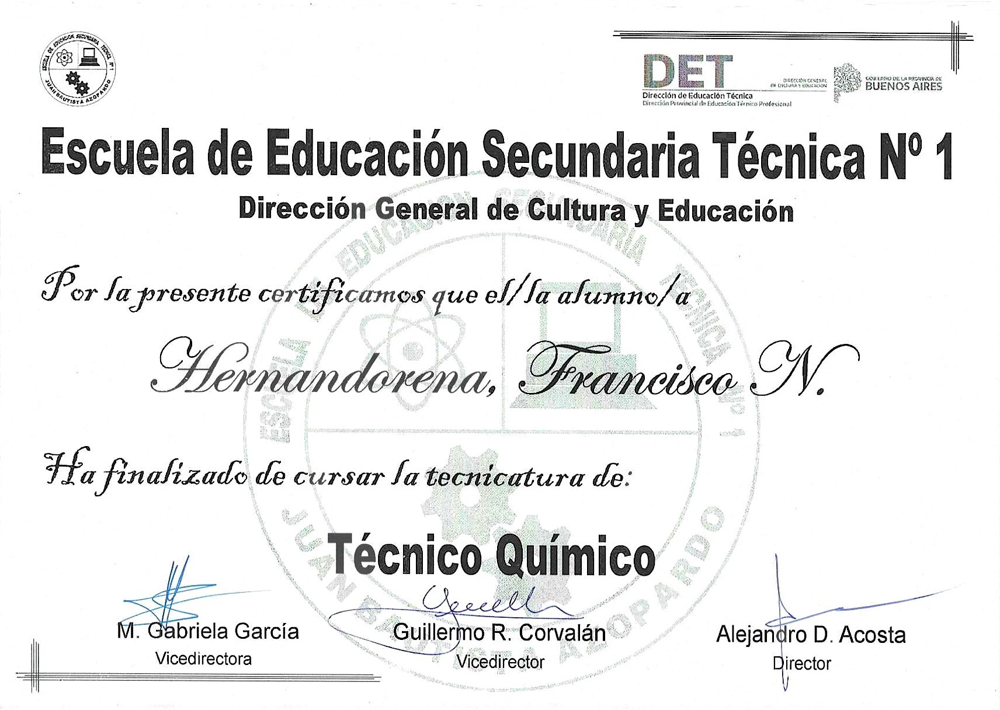
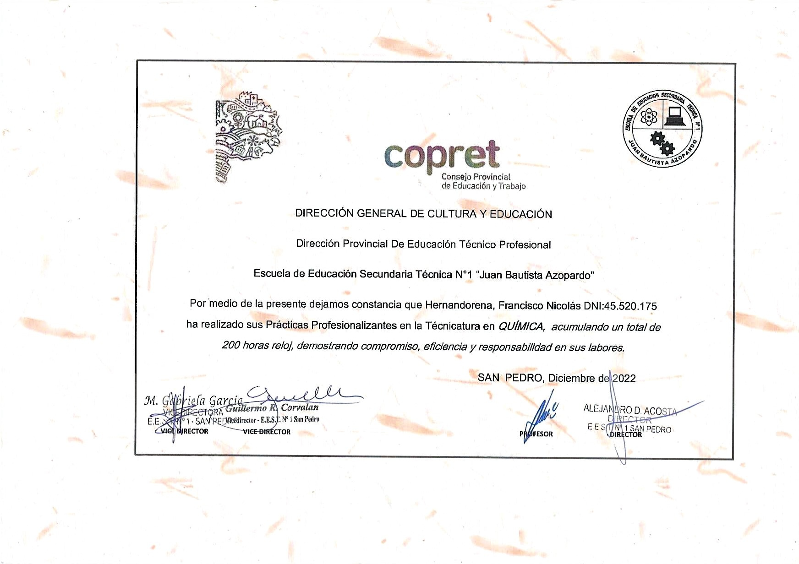
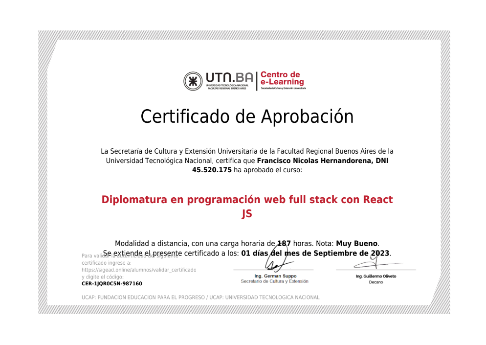
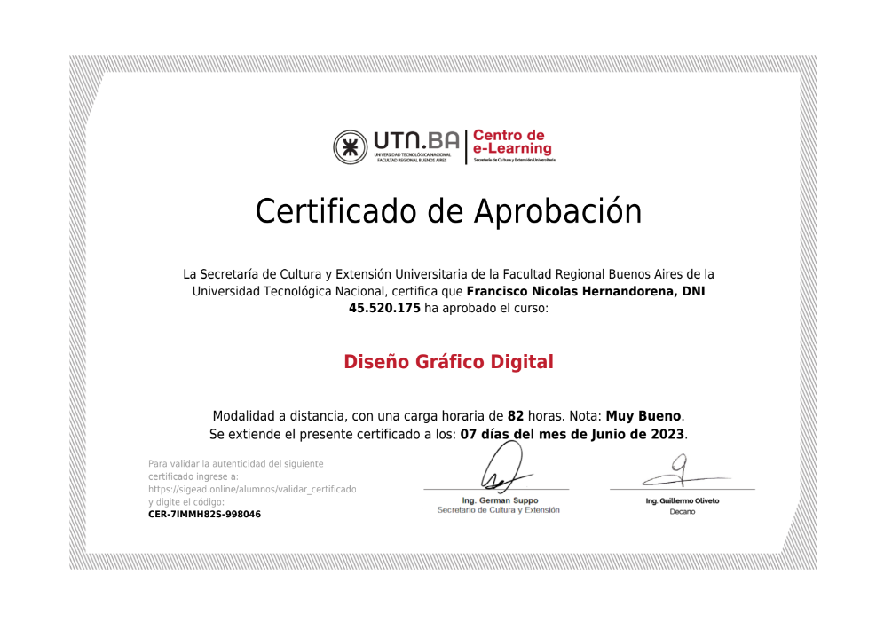
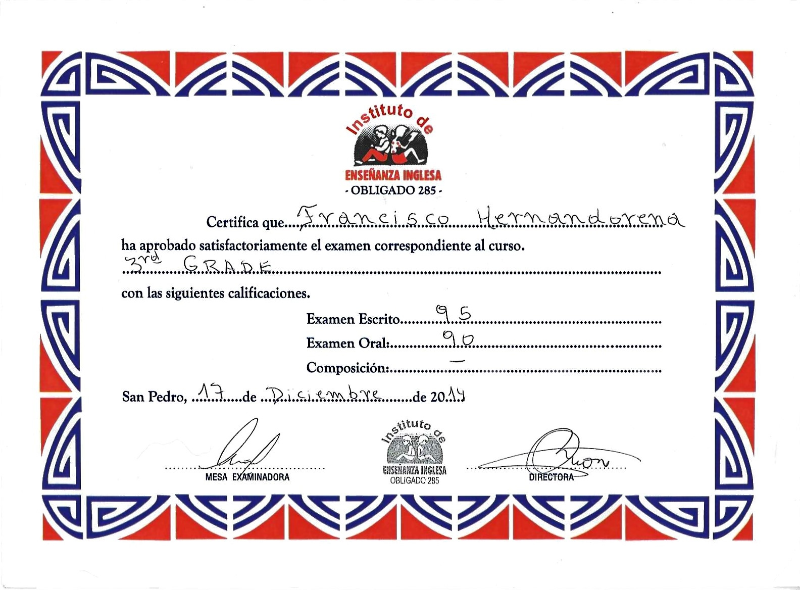
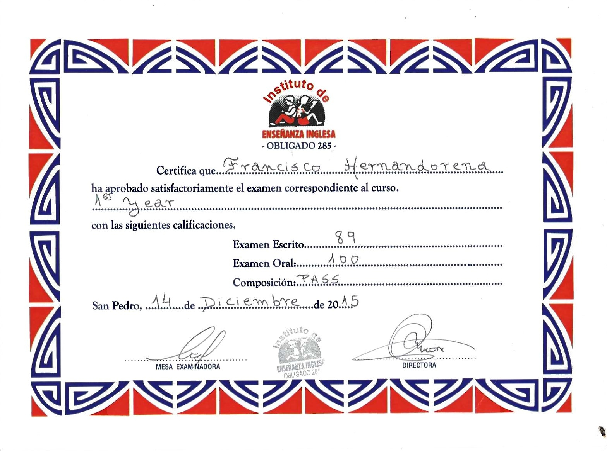

-
Studi secondari
Nel 2022 mi sono diplomato come Perito Chimico presso l'Istituto Tecnico Superiore N°1.
 
Sono stati 7 anni di studio su doppi o tripli turni abbinati a laboratorio dal primo al terzo anno e dal quarto al settimo anno abbinato al laboratorio, considerato il migliore della zona.
Certificati allegati: -
Programmazione
Per tutto il 2023 ho seguito il corso di sviluppo web front-end presso l'UTN. Capisco e utilizzo perfettamente HTML e CSS.
Inoltre, terminato il corso mi sono dedicato completamente a JavaScript, generando conoscenze sempre più avanzate.
Repository Github:
Repository del sito web del curriculum
Progetti JavaScript:
Divisione delle spese! (solo in spagnolo)
Web paint con canvas! (compatibile solo con computer) -
Sviluppo Web front-end
Presso l'UTN di Buenos Aires ho conseguito un diploma in sviluppo web full stack con react JS con un carico di lavoro di 187 ore.

Si è concluso con la creazione di una pagina web front-end completamente funzionale, con immagini, invio di moduli e connessioni al server.
Repository Github:
Repository delle attività del diploma di sviluppo web Front-End
Repository del lavoro finale per il diploma di sviluppo web Front-End
Certificato allegato: -
Progettazione grafica
Ho seguito il corso base di progettazione grafica presso l'UTN di Buenos Aires con un carico di lezioni di 87 ore, basato sull'utilizzo completo degli strumenti Adobe Photoshop e Adobe Illustrator.

Certificato allegato: -
Lingue
-
Inglese
Ho studiato inglese per 5 anni presso l'Istituto "De Analia".
 
Al momento ho un'ottima padronanza della lingua, anche se normalmente non la uso quotidianamente.
Certificati allegati: -
Italiano
All'inizio del 2023 ho iniziato a studiare italiano, presso la Società Italiana della mia città. Oggi continuo con il corso e faccio progressi nel mio apprendimento.
-